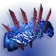

推荐者：
萌动合成手风暴怒吼冰泰坦
 泰坦 · 冰影 · 强度S29 · 凯旋纪念碑
泰坦 · 冰影 · 强度S29 · 凯旋纪念碑
释放风暴怒吼并碎冰可造成大量伤害，通过冰霜护甲和神器模组获得减伤和治疗。
适用环境
标签
# 合成手风暴怒吼冰泰坦 推荐人：萌动 描述：释放风暴怒吼并碎冰可造成大量伤害，通过冰霜护甲和神器模组获得减伤和治疗。 更新：2026.9.1 场景：宗师终极、日常 定位：清怪、续航、功能 分支：冰影 类别：强度 核心：风暴怒吼 ## 职业 职业：泰坦 超能：冰川震击 星相：风暴怒吼、构造收割 碎片：传导之吟、裂解之吟、韵律之吟、破碎之吟 手雷：冰川手雷 近战：战栗打击 职业技能：巍峨屏障 ## 武器 异域武器：战狮 传说武器：言语轨迹 | 丰盈满溢、覆盖护盾克星、热血上头 传说武器：急锋 | 急切刀锋 ## 护甲 异域护甲：合成感受器 套装：贪婪之握 2 件 × 贪婪之握 4 件 头盔：超能洗礼、特殊武器弹药搜寻者 护臂：回天掌法、回天掌法、回天掌法 胸甲：抗性、抗性、震荡阻尼器 腿部：宽恕、元素充能、谐振回收器 职业物品：特殊终结技、强力吸引、感应护盾 ## 神器 神器：杀手公爵药剂师背包 模组：晶体转换器、风寒、迎接风暴、削弱清敌、治疗能量球、冰霜复兴、动能冲击 ## 六维 六维：生命 ~ ｜ 近战 100 ｜ 手雷 100+ ｜ 超能 200 ｜ 职业 ~ ｜ 武器 ~ ## 注解 由于是贪婪之握4件套，碎片除了传导/韵律之吟以外都可自由更换。如果要使用除贪婪之握4件套以外的护甲套装，需要装备饥饿之吟。 武器可换双绿（迷失信号/驱逐引擎+破冰者），无论如何都推荐带一把榴弹，触发削弱清敌施加易伤提高总伤害。 头部根据六维携带一定量的超能洗礼，保证超能属性达到200。风暴怒吼所衍生的碎冰伤害不吃100近战以上的乘算近战加成，但合成手/虫手/雪上加霜类的近战加成仍然生效。手部3回天掌法加快超能回转，超能的输出能力非常夸张。 实战保证近战全程连打，近战冻结目标后第一时间使用武器命中战斗人员造成碎冰伤害，碎冰频率越快输出能力越强。超能期间如果追求dps使用滑铲左键+右键的连招，熟练的情况下超能期间可循环4次。超能追求总伤的话保持一定距离连打右键即可。
职业
武器
神器模组
护甲
- 生命~
- 近战100
- 手雷100+
- 超能200
- 职业~
- 武器~
注解
由于是贪婪之握4件套，碎片除了传导/韵律之吟以外都可自由更换。如果要使用除贪婪之握4件套以外的护甲套装，需要装备饥饿之吟。
武器可换双绿（迷失信号/驱逐引擎+破冰者），无论如何都推荐带一把榴弹，触发削弱清敌施加易伤提高总伤害。
头部根据六维携带一定量的超能洗礼，保证超能属性达到200。风暴怒吼所衍生的碎冰伤害不吃100近战以上的乘算近战加成，但合成手/虫手/雪上加霜类的近战加成仍然生效。手部3回天掌法加快超能回转，超能的输出能力非常夸张。
实战保证近战全程连打，近战冻结目标后第一时间使用武器命中战斗人员造成碎冰伤害，碎冰频率越快输出能力越强。超能期间如果追求dps使用滑铲左键+右键的连招，熟练的情况下超能期间可循环4次。超能追求总伤的话保持一定距离连打右键即可。